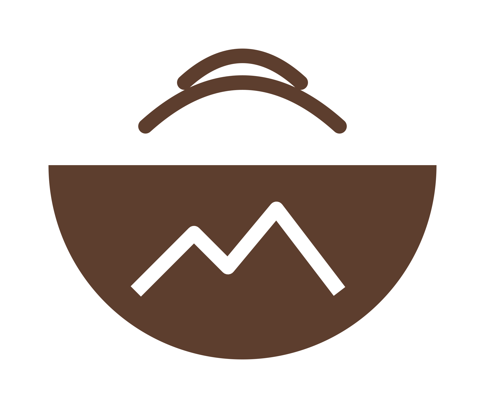
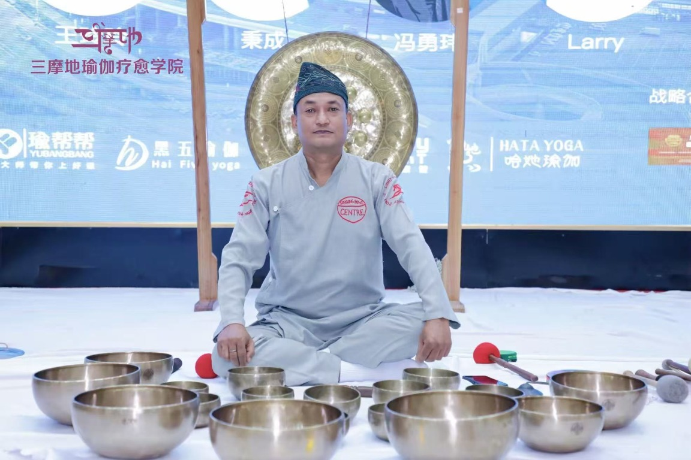
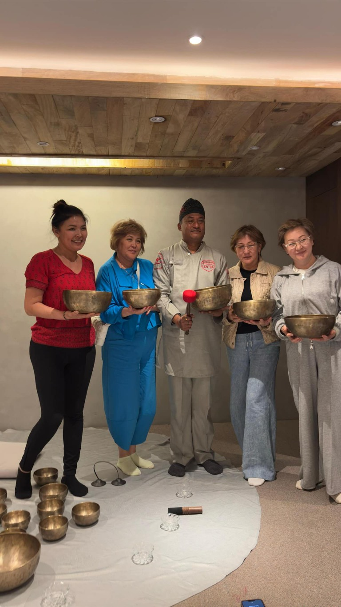
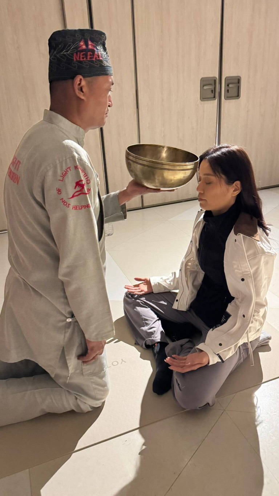
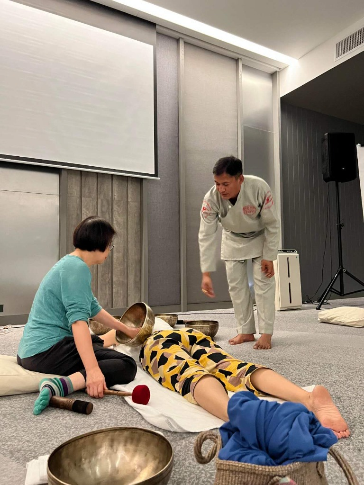
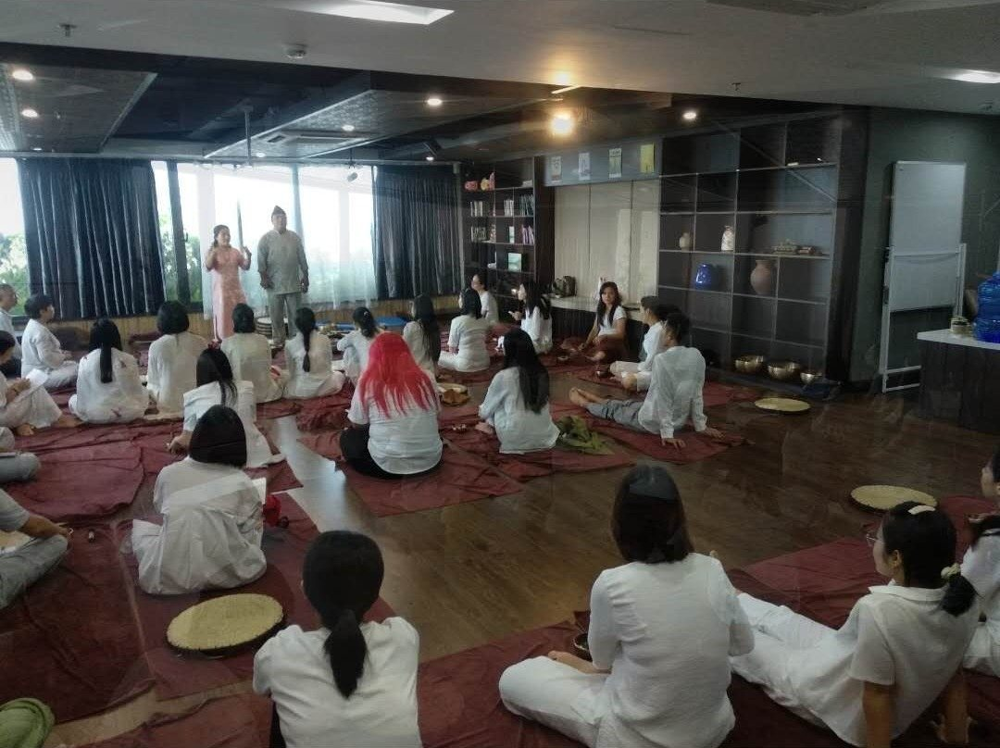
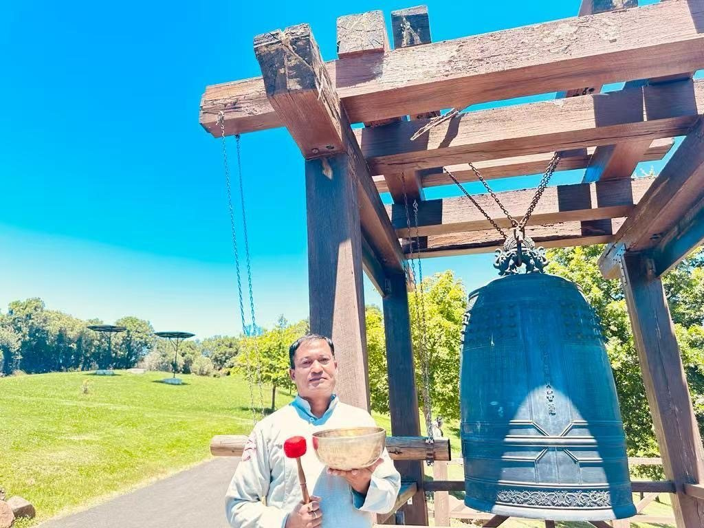
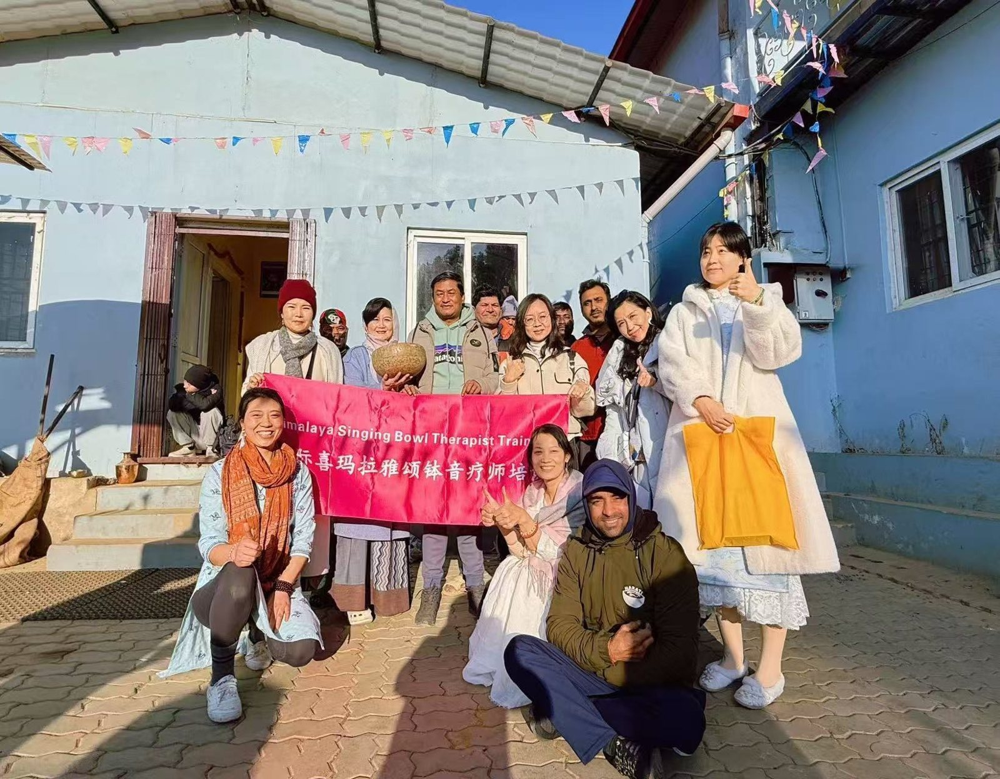

The Shriba's
Our History
1990s
Founder Saroj Shakya's vision to preserve the craft of hand-beaten singing bowls began as a lifelong mission in Kathmandu.


A singing bowl, held and heard in Kathmandu.
In the heart of Thamel, Shriba is a place to meet Himalayan singing bowls up close. Explore hand-beaten Seven Metal Bowls, learn how to hold and play one, or settle in for a one-to-one sound session. We keep the experience personal, unhurried, and grounded in the craft.
A little time to learn, practice, and listen.
The Shriba's
Founder Saroj Shakya's vision to preserve the craft of hand-beaten singing bowls began as a lifelong mission in Kathmandu.
Services
All kinds of singing bowls, from hand-selected individual pieces to bulk orders for shops and practitioners worldwide.
A premium hands-on experience led by Master Saroj Shakya himself. From one-to-one therapeutic sessions to structured beginner, intermediate, and master certification classes.
We are the official distributor for Fullmoon singing bowls in Nepal. Authentic, hand-beaten quality guaranteed.
Guided by experience
With over three decades of dedicated practice, Master Saroj Shakya is a master artisan and sound practitioner. Trained in the traditional metallurgy of hand-beaten Himalayan bowls, he has spent his life mastering their acoustics and therapeutic application.
He has shared the practice globally—leading therapist certification courses in Vietnam, masterclasses in Thailand, and main-stage sound healing at the Yoga Meditation Festival in Chongqing, China.
Today, he brings that lifetime of craft and teaching back home to the Shriba Singing Bowl Centre in Thamel.

Master Saroj Shakya teaching in Chongqing, China.

Real practice: floor, textiles, soft light.
Visit
Step in, sit with the bowls, and ask questions. We keep the space small and the pace slow, so you can explore each bowl up close and listen to its sound. Whether you are curious about the craft or hoping to try playing, our team will help you find a comfortable place to begin. Message us ahead to arrange a workshop or one-to-one session.
Plan your visitThe craft
The bowls we share are hand-beaten by Kathmandu artisans, with craft knowledge carried across generations. At Shriba, that living tradition continues through the simple acts of making, teaching, and listening.
Come learn the practice at your own pace.
The practice
Moments from workshops and sound sessions with Master Saroj Shakya.







Ask us about singing bowls, sessions, workshops, or planning your visit. We’d be happy to help.